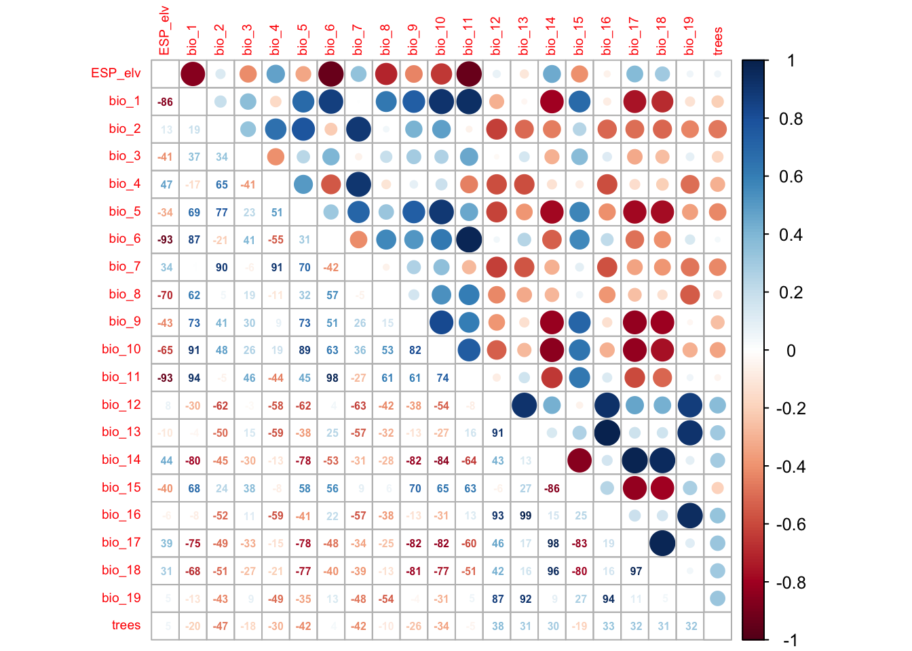

RStudio project
Open the RStudio project that we created in the previous session. I recommend to use this RStudio project for the entire module and within the RStudio project create separate R scripts for each session.
# Session Occ-4: Simple occupancy models and save the file
in your folder “scripts” within your project folder, e.g. as
“Occ4_SimpleOccModel.R”We have already heard that occupancy (or occupancy-detection) models can deal with imperfect detection in species distribution modelling (Guillera-Arroita 2017; Kéry and Royle 2015). In the following, we will focus on false negative errors (not recording a species although present) as these tend to be more common in surveys than false positive errors (recording a species although absent). Accounting for this imperfect detection requires a hierarchical model structure in which we describe two separate processes:
the system or state process that represents the underlying biological state, here the presence/absence of a species at site i:
\(z_i \sim Bernoulli(\psi_i)\)
the observation process that describes the data observation or collection, here the probability of observing a species during survey j if the species is indeed present at site i:
\(y_{ii}|z_i \sim Bernoulli(z_i*p_{ij})\)
where
\(\psi_i\) .. the probability of occupancy (species presence) at site i
\(z_i\) .. the true state of occupancy of site i
\(p_{ij}\) .. the detection probability of the study species at site i during survey j
\(y_{ij}\) .. the observed data (our observation of presence/absence) at site i during survey j
Thus, we want to predict the probability of detecting a species conditional on the probability of occupancy of that species. Each process can be described as a function of environmental covariates (predictor variables). The site covariates describe how occupancy varies across environmental gradients, the survey covariates describe how detection varies across environmental gradients.
To tease apart the state process and the observation process, we need information about how detections took place (Guillera-Arroita 2017). These typically stem from repeat visits at a site (over time or by several observers), from multiple independent detection methods, or from spatial subsampling. If the species is observed (\(y=1\)), then also the true state of occupancy is a presence (\(z=1\)). However, if the species is not observed (\(y=0\)), the true state of occupancy could be either a presence (\(z=1\)) but the species was simply not observed (with probability of \(1-p\)), or the true state could indeed by an absence (\(z=0\)).
When repeat visits are undertaken, these should be close enough in time to avoid any violation of the closure assumption. This assumes that occupancy remains constant between the repeat visits, e.g. no emigration or colonisation takes place over this time frame.
In this course, we will use two linked GLMs (generalised linear models) to describe the state process and the observation process.
Generalised linear models (GLMs) are useful when our response variable is not normally distributed. Remember that ordinary least squares (OLS) linear regression assumes normally distributed data within the ranges (\(-\infty,\infty\)). OLS regression looks like this
\[E(Y|X)=\beta X+\epsilon\]
where \(E(Y|X)\) is the conditional mean, meaning the expected value of the response \(Y\) given the environmental predictors \(X\) (Hosmer and Lemeshow 2013). \(X\) is the matrix of predictors (including the intercept), \(\beta\) are the coefficients for the predictors, and \(\epsilon\) is the (normally distributed) error term. \(\beta X\) is referred to as the linear predictor.
When we want to predict species occupancy based on environment, then the conditional mean \(E(Y|X)\) is binary and bounded between 0 (absence) and 1 (presence). Thus, the assumptions of OLS regression are not met. GLMs are more flexible regression models that allow the response variable to follow other distributions. Similar to OLS regression, we also fit a linear predictor \(\beta X\) and then relate this linear predictor to the mean of the response variable using a link function. The link function is used to transform the response to normality. In case of a binary response, we typically use the logit link (or sometimes the probit link). The conditional mean is then given by:
\[E(Y|X) = \pi (X) = \frac{e^{\beta X+\epsilon}}{1+e^{\beta X+\epsilon}}\]
The logit transformation is defined as: \[g(X) = ln \left( \frac{\pi (X)}{1-\pi (X)} \right) = \beta X+\epsilon\]
The trick is that the logit, g(X), is now linear in its parameters, is continuous and may range (\(-\infty,\infty\)). GLMs with a logit link are also called logistic regression models.
We have already prepared a dataset with repeat observations for the red kite in Practical 2. These data contain the observed presence/absence of red kites in Spain in 5 km cells for the months April to June.
# Load species data from Practical 2:
load('data/redkite_det_Esp_2022_wide.RData')
summary(redkite_det_Esp_2022_wide)## cell x y month4
## Min. : 2408 Min. :-8.662 Min. :36.05 Min. :0.0000
## 1st Qu.:15309 1st Qu.:-5.704 1st Qu.:38.92 1st Qu.:0.0000
## Median :27602 Median :-3.871 Median :40.50 Median :1.0000
## Mean :28614 Mean :-3.445 Mean :40.38 Mean :0.6649
## 3rd Qu.:40414 3rd Qu.:-1.371 3rd Qu.:42.02 3rd Qu.:1.0000
## Max. :63829 Max. : 3.087 Max. :43.59 Max. :1.0000
## month5 month6
## Min. :0.0000 Min. :0.0000
## 1st Qu.:0.0000 1st Qu.:0.0000
## Median :1.0000 Median :1.0000
## Mean :0.6701 Mean :0.6186
## 3rd Qu.:1.0000 3rd Qu.:1.0000
## Max. :1.0000 Max. :1.0000We can get a naïve occupancy estimate for the red kite by simply counting the number of 5 km cells where at least one presence was recorded during the repeat visits and dividing by the total number of sites surveyed:
# Naive occupancy estimate:
sum(apply(redkite_det_Esp_2022_wide[,4:6], 1, max)) / nrow(redkite_det_Esp_2022_wide)## [1] 0.8865979The naïve estimate is that red kite occupy 89% of the sites. However, due to false negatives (failure to detect the species although present) the true occupancy might be underestimated.
To estimate the detection probability for the red kite and the true
occupancy probability, we use the unmarked package (Fiske and Chandler 2011). For this, we first
have to create an object of class unmarkedFrameOccu
library(unmarked)
# Create unmarked object containing the detection and non-detection data:
occ_redkite <- unmarkedFrameOccu(y=redkite_det_Esp_2022_wide[,4:6])Next, we fit a single season occupancy model using the function
occu() in the unmarked package. This function
requires a double formula that specifies the survey and the site
covariates (predictor variables), first for the detection process and
second for the state (occupancy) process:
occu(~survey covariates ~site covariates). Here, we will
not add any survey or site covariates, meaning that we simply estimate a
null model:
# Fitting simple single season occupancy models without survey or site covariates (intercept model):
m_occ_null <- occu(~1 ~ 1, occ_redkite)
# Summarise model output:
summary(m_occ_null)##
## Call:
## occu(formula = ~1 ~ 1, data = occ_redkite)
##
## Occupancy (logit-scale):
## Estimate SE z P(>|z|)
## 2.28 0.199 11.4 2.87e-30
##
## Detection (logit-scale):
## Estimate SE z P(>|z|)
## 0.935 0.0753 12.4 2.29e-35
##
## AIC: 1458.679
## Number of sites: 388
## optim convergence code: 0
## optim iterations: 48
## Bootstrap iterations: 0The estimates for the occupancy probability and the detection probability are provided at logit scale and we need to back transform them to get probability estimates between 0 and 1.
# Get detection probability estimate:
(p_det <- backTransform(m_occ_null, "det"))## Backtransformed linear combination(s) of Detection estimate(s)
##
## Estimate SE LinComb (Intercept)
## 0.718 0.0152 0.935 1
##
## Transformation: logistic# Get occupancy probability estimate:
(p_psi <- backTransform(m_occ_null, "state"))## Backtransformed linear combination(s) of Occupancy estimate(s)
##
## Estimate SE LinComb (Intercept)
## 0.907 0.0168 2.28 1
##
## Transformation: logisticWe see that our detection probability is rather high at 72% and indeed our estimated occupancy probability is 91% and thus close to our naïve estimate of 89%.
Most of the time we are probably more interested in how far site covariates affect occupancy probability or even in how far survey covariates affect detection probability. In practical Occ-3, we have already extracted environmental data for our survey data set. Now, we want to add this environmental information to our occupancy-detection model to explain how occupancy (or detection) varies across environmental gradients.
In our first set of models, we assume that detection probability is constant in space and only test the effect of different site covariates in occupancy. For simplicity, we focus only on two site covariates (bio1 = mean annual temperature, and tree cover). Later, we will learn how deal with multiple site (or survey) covariates.
We first load our data set containing both detection data and
environmental variables and create an unmarked data
object.
# Load species data from Practical 3:
load('data/redkite_det_env_Esp_2022.RData')
head(redkite_det_env_Esp_2022)## cell x y month4 month5 month6 ID ESP_elv bio_1 bio_2
## 1 52971 -5.995833 37.37917 1 1 1 1 11.96 18.62383 11.624333
## 2 28278 -3.745833 40.42083 1 1 1 2 627.32 14.45633 11.036667
## 3 53647 -6.079167 37.29583 1 1 1 3 27.56 18.14633 11.877333
## 4 58731 -6.120833 36.67083 1 1 1 4 34.08 17.94817 9.913667
## 5 27941 -3.662500 40.46250 1 1 0 5 715.32 14.03783 10.963667
## 6 54322 -6.204167 37.21250 1 1 1 6 11.16 17.96250 11.380333
## bio_3 bio_4 bio_5 bio_6 bio_7 bio_8 bio_9 bio_10 bio_11
## 1 41.09237 588.1969 34.452 6.164 28.288 12.606667 26.03933 26.18200 11.78667
## 2 36.74473 680.4317 31.768 1.732 30.036 10.330000 23.36600 23.36600 6.77200
## 3 41.94698 576.6686 34.084 5.768 28.316 12.310000 25.41333 25.56267 11.45000
## 4 40.85036 509.7639 31.368 7.100 24.268 12.980667 24.23400 24.63333 12.08800
## 5 36.62693 680.0941 31.348 1.416 29.932 9.904667 22.95333 22.95333 6.38000
## 6 42.20560 548.9442 32.964 6.000 26.964 12.456000 24.81667 25.03133 11.57200
## bio_12 bio_13 bio_14 bio_15 bio_16 bio_17 bio_18 bio_19 trees
## 1 536.20 93.72 2.00 67.06034 252.28 22.20 27.12 223.76 0.088260
## 2 397.36 50.52 10.00 41.05074 144.00 47.32 47.32 119.16 0.525668
## 3 537.08 93.84 2.00 66.61317 252.08 22.92 27.04 224.84 0.084180
## 4 581.84 102.36 1.00 69.60263 279.48 20.48 23.08 253.96 0.068260
## 5 425.24 55.68 10.88 41.12534 155.56 49.76 49.76 126.56 0.191820
## 6 522.16 92.16 2.00 68.17232 248.60 21.16 25.00 222.12 0.257988To help stabilize the numerical optimisation algorithm, we recommend
standardising the covariates. This can easily be done using the base
function scale().
# Standardise all covariates to have a mean=0 and standard deviation sd=1:
redkite_det_env_Esp_2022[,-c(1:7)] <- scale(redkite_det_env_Esp_2022[,-c(1:7)])
# Create unmarked object containing the detection and non-detection data and the covariate data:
occ_env_redkite <- unmarkedFrameOccu(y = redkite_det_env_Esp_2022[,4:6], siteCovs = redkite_det_env_Esp_2022[,-c(1:7)])We use the same method as we did for our null model only that we now
add the name(s) of site covariates to the formula (the names are the
column names of our data set). Remember that the formula in the
occu() function of unmarked takes the form:
occu(~survey covariates ~site covariates).
# Fitting simple single season occupancy models without survey or site covariates (intercept model):
m_occ_bio1 <- occu(~1 ~ bio_1, occ_env_redkite)
# Summarise model output:
summary(m_occ_bio1)##
## Call:
## occu(formula = ~1 ~ bio_1, data = occ_env_redkite)
##
## Occupancy (logit-scale):
## Estimate SE z P(>|z|)
## (Intercept) 2.286 0.202 11.297 1.35e-29
## bio_1 -0.149 0.222 -0.671 5.02e-01
##
## Detection (logit-scale):
## Estimate SE z P(>|z|)
## 0.934 0.0754 12.4 2.6e-35
##
## AIC: 1460.192
## Number of sites: 388
## optim convergence code: 0
## optim iterations: 35
## Bootstrap iterations: 0We can also fit quadratic or higher polynomial terms (check
?poly) and interactions between predictors:
- the term I()indicates that a variable should be
transformed before being used as predictor in the formula
- poly(x,n) creates a polynomial of degree \(n\): \(x + x^2 +
... + x^n\)
- x1:x2 creates a two-way interaction term between
variables x1 and x2, the linear terms of x1 and x2 would have to be
specified separately
- x1*x2 creates a two-way interaction term between
variables x1 and x2 plus their linear terms
Let’s play with these notations a little bit.
# Add quadratic term:
occu(~1 ~ bio_1 + I(bio_1^2), occ_env_redkite)##
## Call:
## occu(formula = ~1 ~ bio_1 + I(bio_1^2), data = occ_env_redkite)
##
## Occupancy:
## Estimate SE z P(>|z|)
## (Intercept) 2.84 0.655 4.33 1.48e-05
## bio_1 -3.82 2.066 -1.85 6.46e-02
## I(bio_1^2) 2.79 1.422 1.96 5.00e-02
##
## Detection:
## Estimate SE z P(>|z|)
## 0.859 0.0714 12 2.31e-33
##
## AIC: 1462.95# Add quadratic term using poly():
occu(~1 ~ poly(bio_1, degree=2, raw=T), occ_env_redkite)##
## Call:
## occu(formula = ~1 ~ poly(bio_1, degree = 2, raw = T), data = occ_env_redkite)
##
## Occupancy:
## Estimate SE z P(>|z|)
## (Intercept) 2.84 0.655 4.33 1.48e-05
## poly(bio_1, degree = 2, raw = T)1 -3.82 2.066 -1.85 6.46e-02
## poly(bio_1, degree = 2, raw = T)2 2.79 1.422 1.96 5.00e-02
##
## Detection:
## Estimate SE z P(>|z|)
## 0.859 0.0714 12 2.31e-33
##
## AIC: 1462.95# Add another covariate:
occu(~1 ~ bio_1 + trees, occ_env_redkite)##
## Call:
## occu(formula = ~1 ~ bio_1 + trees, data = occ_env_redkite)
##
## Occupancy:
## Estimate SE z P(>|z|)
## (Intercept) 2.296 0.206 11.139 8.07e-29
## bio_1 -0.119 0.229 -0.521 6.02e-01
## trees 0.145 0.227 0.640 5.22e-01
##
## Detection:
## Estimate SE z P(>|z|)
## 0.934 0.0754 12.4 3.01e-35
##
## AIC: 1461.749# Add quadratic terms for both covariates:
occu(~1 ~ bio_1 + I(bio_1^2) + trees + I(trees^2), occ_env_redkite)##
## Call:
## occu(formula = ~1 ~ bio_1 + I(bio_1^2) + trees + I(trees^2),
## data = occ_env_redkite)
##
## Occupancy:
## Estimate SE z P(>|z|)
## (Intercept) 2.806 0.707 3.968 7.24e-05
## bio_1 -3.922 2.140 -1.833 6.68e-02
## I(bio_1^2) 2.915 1.465 1.990 4.66e-02
## trees 0.231 0.397 0.581 5.61e-01
## I(trees^2) 0.156 0.422 0.370 7.12e-01
##
## Detection:
## Estimate SE z P(>|z|)
## 0.856 0.0716 12 6.12e-33
##
## AIC: 1465.713Finally, let’s add a covariate to assess how detection probability
varies with elevation. Note that this variable is also part of our site
covariates in the unmarkedFrameOccu object. This has the
simple reason that this variable does not vary across repeated surveys
as would e.g. be the case for wind data. We can nevertheless also use
those covariates that are constant across all surveys to explain spatial
variation in detection probability.
(m_occdet_bio1q_treesq <- occu(~ESP_elv ~ bio_1 + I(bio_1^2) + trees + I(trees^2), occ_env_redkite))##
## Call:
## occu(formula = ~ESP_elv ~ bio_1 + I(bio_1^2) + trees + I(trees^2),
## data = occ_env_redkite)
##
## Occupancy:
## Estimate SE z P(>|z|)
## (Intercept) 2.7974 0.669 4.179 2.93e-05
## bio_1 -3.8874 1.969 -1.974 4.84e-02
## I(bio_1^2) 2.8314 1.338 2.116 3.44e-02
## trees 0.2093 0.368 0.569 5.70e-01
## I(trees^2) 0.0944 0.301 0.314 7.53e-01
##
## Detection:
## Estimate SE z P(>|z|)
## (Intercept) 0.891 0.0723 12.33 6.64e-35
## ESP_elv -0.236 0.0657 -3.59 3.26e-04
##
## AIC: 1454.919But how to decide which model best explains the observed data? A
useful statistic is the AIC, the Akaike information criterion,
which is part of the standard output of the unmarked
models. It is based on the deviance and thus conveys information about
how closely the model fits the data. It is calculated from the
log-likelihood \(L\) and penalises for
the number of parameters \(p\)
(regression coefficients) in the model:
\[AIC = -2 \times L + 2 \times (p+1)\] AIC thus takes into account model complexity. In general, lower values of AIC are preferable. But caution, AIC cannot be interpreted in absolute terms and cannot be compared between different data sets. It can, however, provide a meaningful way to compare different candidate models for the same data set.
We can simply extract the AIC from the model objects.
# Extract AIC
m_occ_bio1@AIC## [1] 1460.192m_occdet_bio1q_treesq@AIC## [1] 1454.919The unmarked package also contains a function
modSel() function for computing AIC-based model selection.
For this, we have to provide a list of models to compare. Let’s
systematically compare the different predictor variables to explain
occupancy and detection. To do so, we have to add all candidate models
to a fitList object. Note that all models in the list have
to be based on the same data frame. We thus also have to refit our null
model.
# Collect the candidate models in a named list. Try to use meaningful names of the models
cand_models <- fitList(
"p(1) psi(1)" = occu(~1 ~ 1, occ_env_redkite),
"p(1) psi(bio1)" = occu(~1 ~ bio_1, occ_env_redkite),
"p(1) psi(bio1.sqr)" = occu(~1 ~ bio_1 + I(bio_1^2), occ_env_redkite),
"p(1) psi(trees)" = occu(~1 ~ trees, occ_env_redkite),
"p(1) psi(trees.sqr)" = occu(~1 ~ trees + I(trees^2), occ_env_redkite),
"p(1) psi(bio1 + trees)" = occu(~1 ~ bio_1 + trees, occ_env_redkite),
"p(1) psi(bio1.sqr + trees)" = occu(~1 ~ bio_1 + I(bio_1^2) + trees, occ_env_redkite),
"p(1) psi(bio1.sqr + trees.sqr)" = occu(~1 ~ bio_1 +I(bio_1^2) + trees + I(trees^2), occ_env_redkite),
"p(elev) psi(1)" = occu(~ESP_elv ~ 1, occ_env_redkite),
"p(elev) psi(bio1)" = occu(~ESP_elv ~ bio_1, occ_env_redkite),
"p(elev) psi(bio1.sqr)" = occu(~ESP_elv ~ bio_1 + I(bio_1^2), occ_env_redkite),
"p(elev) psi(trees)" = occu(~ESP_elv ~ trees, occ_env_redkite),
"p(elev) psi(trees.sqr)" = occu(~ESP_elv ~ trees + I(trees^2), occ_env_redkite),
"p(elev) psi(bio1 + trees)" = occu(~ESP_elv ~ bio_1 + trees, occ_env_redkite),
"p(elev) psi(bio1.sqr + trees)" = occu(~ESP_elv ~ bio_1 + I(bio_1^2) + trees, occ_env_redkite),
"p(elev) psi(bio1.sqr + trees.sqr)" = occu(~ESP_elv ~ bio_1 +I(bio_1^2) + trees + I(trees^2), occ_env_redkite)
)
# Compute the summary output for model selection. When explicitly stating which candidate model refers is the null model, then a Nagelkerke R-square is computed.
(m_sel <- modSel(cand_models, nullmod="p(1) psi(1)"))## nPars AIC delta AICwt cumltvWt Rsq
## p(elev) psi(bio1.sqr) 5 1451.96 0.00 0.45849 0.46 0.03303
## p(elev) psi(bio1.sqr + trees) 6 1453.03 1.07 0.26787 0.73 0.03539
## p(elev) psi(bio1.sqr + trees.sqr) 7 1454.92 2.96 0.10440 0.83 0.03568
## p(elev) psi(1) 3 1456.93 4.97 0.03823 0.87 0.00985
## p(elev) psi(bio1) 4 1456.95 4.99 0.03777 0.91 0.01501
## p(elev) psi(trees) 4 1457.95 5.99 0.02296 0.93 0.01241
## p(elev) psi(bio1 + trees) 5 1458.29 6.33 0.01934 0.95 0.01672
## p(1) psi(1) 2 1458.68 6.72 0.01593 0.96 0.00000
## p(elev) psi(trees.sqr) 5 1459.75 7.79 0.00933 0.97 0.01293
## p(1) psi(trees) 3 1460.04 8.08 0.00808 0.98 0.00169
## p(1) psi(bio1) 3 1460.19 8.23 0.00748 0.99 0.00129
## p(1) psi(bio1 + trees) 4 1461.75 9.79 0.00343 0.99 0.00245
## p(1) psi(trees.sqr) 4 1461.90 9.94 0.00318 1.00 0.00205
## p(1) psi(bio1.sqr) 4 1462.95 10.99 0.00188 1.00 -0.00071
## p(1) psi(bio1.sqr + trees) 5 1463.92 11.96 0.00116 1.00 0.00201
## p(1) psi(bio1.sqr + trees.sqr) 6 1465.71 13.75 0.00047 1.00 0.00255The output provides different useful summary statistics.
delta refers to the \(\Delta
AIC\) and is the difference in AIC between different models,
relative to the smallest AIC found in the candidate model set, meaning
relative to the best model. When the number of candidate models is
reasonably small, the \(\Delta AIC\)
can be interpreted straightforwardly. A \(\Delta AIC\) between 0 and 2 indicates
substantial support for the candidate models, meaning they are
essentially as good as the best model, while values between 4-7 indicate
considerably less support compared to the best model, and a value
greater than 10 indicates no support for the candidate model (Burnham and Anderson 2002).AICwt refers to the Akaike weight, which is
the relative likelihood of a model compared to all other models in the
candidate model set. These weights are normalised to sum to 1 and are
typically interpreted as probability that the model is the best
performing (Burnham and Anderson
2002).cumltvWt refers to the cumulative Akaike weights from
top to bottom.Rsq is computed when the null model is specified in the
modSel() function and is the Nagelkerke \(R_{N}^{2}\), generalization of the
coefficient of determination \(R^2\)
(Nagelkerke 1991). Typically, \(R^2\) values in logistic regression are
rather low (Hosmer and Lemeshow
2013).GLMs (and many other statistical models) have problems to fit stable parameters if two or more predictor variables are highly correlated, resulting in so-called multicollinearity issues (Dormann et al. 2013). Thus, before we can add more covariates to our models, we need to check for multi-collinearity and select an initical set of covariates that are only weakly correlated. Then, we can fit our occupancy models including multiple predictors and with differently complex response shapes. This model can then be further simplified by removing “unimportant” predictors.
Different approaches exist for quantifying and removing collinearity (Dormann et al. 2013), and we here only introduce a single, simple and pragmatic yet efficient approach based on pairwise correlation.
We first check for pairwise correlations among predictors. Generally, correlations below |r|<0.7 are considered unproblematic (or below |r|<0.5 as more conservative threshold).
library(corrplot)
# We first estimate a correlation matrix from the covariates
# We use Spearman rank correlation coefficient, as we do not know
# whether all variables are normally distributed.
cor_mat <- cor(occ_env_redkite@siteCovs, method='spearman')
# We can visualise this correlation matrix. For better visibility,
# we plot the correlation coefficients as percentages.
corrplot.mixed(cor_mat, tl.pos='lt', tl.cex=0.6, number.cex=0.5, addCoefasPercent=T)
If no prior knowledge is available on the importance of different predictors, then Dormann et al. (2013) suggest to assess univariate variable importance in terms of AIC (Akaike information criterion) or explained deviance. In practice, this means that we fit separate occupancy-detection models for each predictor, assess the importance of the predictor in terms of AIC and then rank the variables according to their univariate importance. To do so, we first need to identify all pairs of variables that have correlation |r|>0.7 and remove the less important variable. Dormann et al. (2013) call this the select07 method.
A select07_unm() function is implemented in the package
mecofun along with some other useful functions for
teaching. We first have to install the package from the Univ. Potsdam
gitlab:
library(devtools)
devtools::install_git("https://gitup.uni-potsdam.de/macroecology/mecofun.git")Now, you can load the package and try out the function. Also, check
out the help pages for ?select07_unm.
library(mecofun)
# Run select07()
var_sel <- select07_unm(occ_env_redkite, names(occ_env_redkite@siteCovs), threshold=0.7)
# Check out the structure of the resulting object:
str(var_sel)## List of 3
## $ AIC : Named num [1:21] 1460 1460 1460 1460 1460 ...
## ..- attr(*, "names")= chr [1:21] "bio_15" "bio_14" "bio_10" "bio_18" ...
## $ cor_mat : num [1:21, 1:21] 1 -0.859 0.129 -0.412 0.475 ...
## ..- attr(*, "dimnames")=List of 2
## .. ..$ : chr [1:21] "ESP_elv" "bio_1" "bio_2" "bio_3" ...
## .. ..$ : chr [1:21] "ESP_elv" "bio_1" "bio_2" "bio_3" ...
## $ pred_sel: chr [1:9] "bio_15" "bio_10" "trees" "bio_12" ...# We extract the names of the weakly correlated predictors ordered by the univariate variable importance in terms of AIC:
pred_sel <- var_sel$pred_selSo, we have now reduced our set of covariates that are only weakly correlated. Now, we need to decide whether all of the remaining should be included in the final model, or if we select only a few, for example the two most important variables in terms of univariate AIC. As a rule of thumb, we should have ten observations (presence sites or absence sites) per covariate that is included in the model (Guisan, Thuiller, and Zimmermann 2017).
# Number of presences
sum(apply(redkite_det_env_Esp_2022[,4:6], 1, max))## [1] 344# Number of absence
nrow(redkite_det_env_Esp_2022) - sum(apply(redkite_det_env_Esp_2022[,4:6], 1, max))## [1] 44In our case, we have comparably few absence site, which will thus be the limiting number.
Exercise: